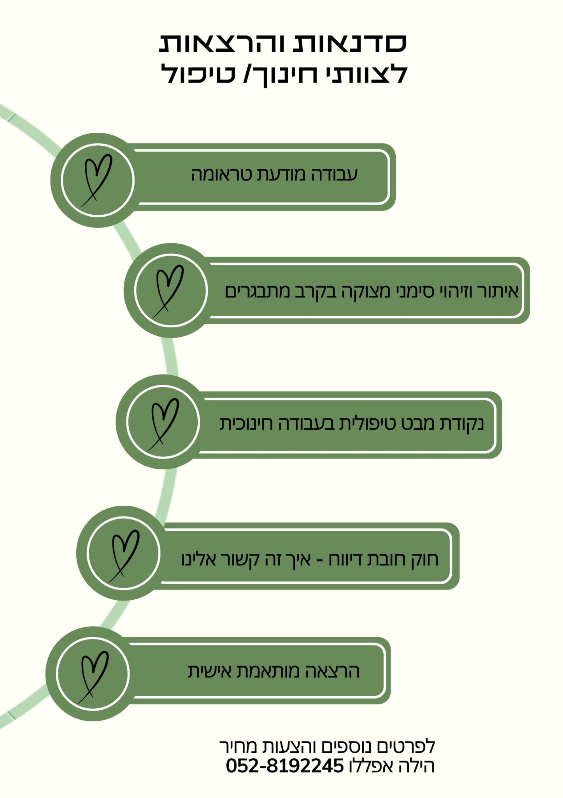

עליי
אני הילה אפללו, עובדת סוציאלית בעלת תואר שני (M.S.W) עם ניסיון של למעלה מ־11 שנים בעבודה עם נוער וצעירים המתמודדים עם אתגרי חיים מורכבים, ומספקת עבורם סביבה בטוחה, רגישה ותומכת – לצמיחה אישית ולהתמודדות עם קשיים.
אני מאמינה ביכולת של אנשים לעבור תהליכי שינוי משמעותיים, לחיות בשלום פנימי, ולגלות את הערך הייחודי שבהם.
בקליניקה שלי אני מציעה טיפול רגשי פרטני, המותאם לצרכים האישיים של כל מטופל ומטופלת. אז אם אתם חווים חרדה, דיכאון, קשיים בין־אישיים, או כל קושי רגשי אחר – אני כאן כדי ללוות אתכם במסע לקראת שינוי חיובי, רוגע פנימי וחיזוק הכוחות שבכם.
מוזמנים ליצור קשר לתיאום פגישת היכרות. ביחד נצא לדרך של ריפוי, צמיחה והעצמה.
 בואו נדבר בוואטסאפ
בואו נדבר בוואטסאפ
